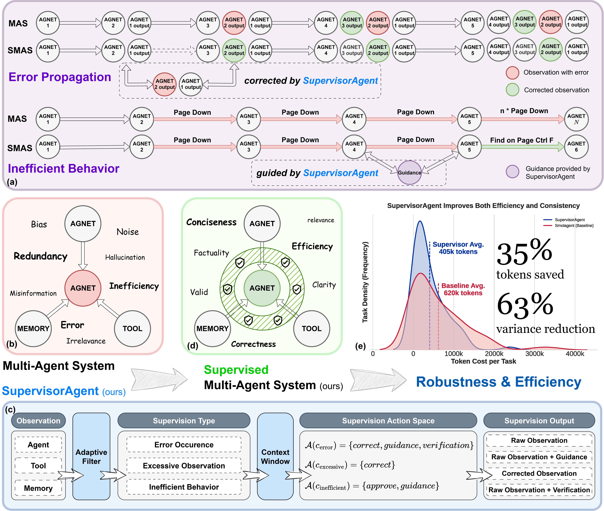
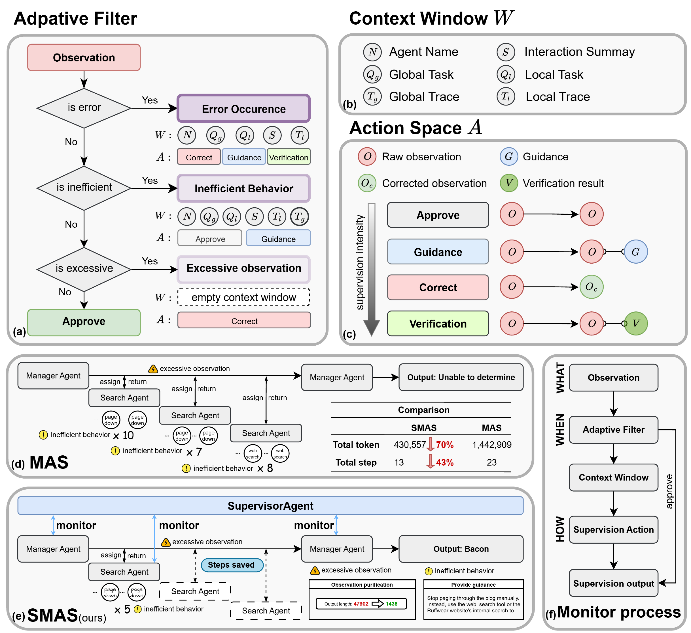
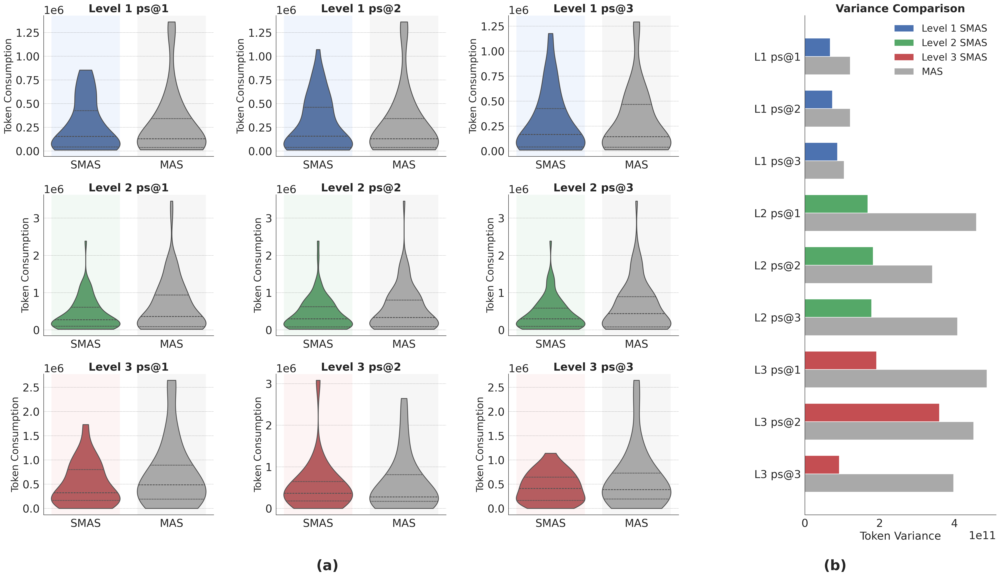
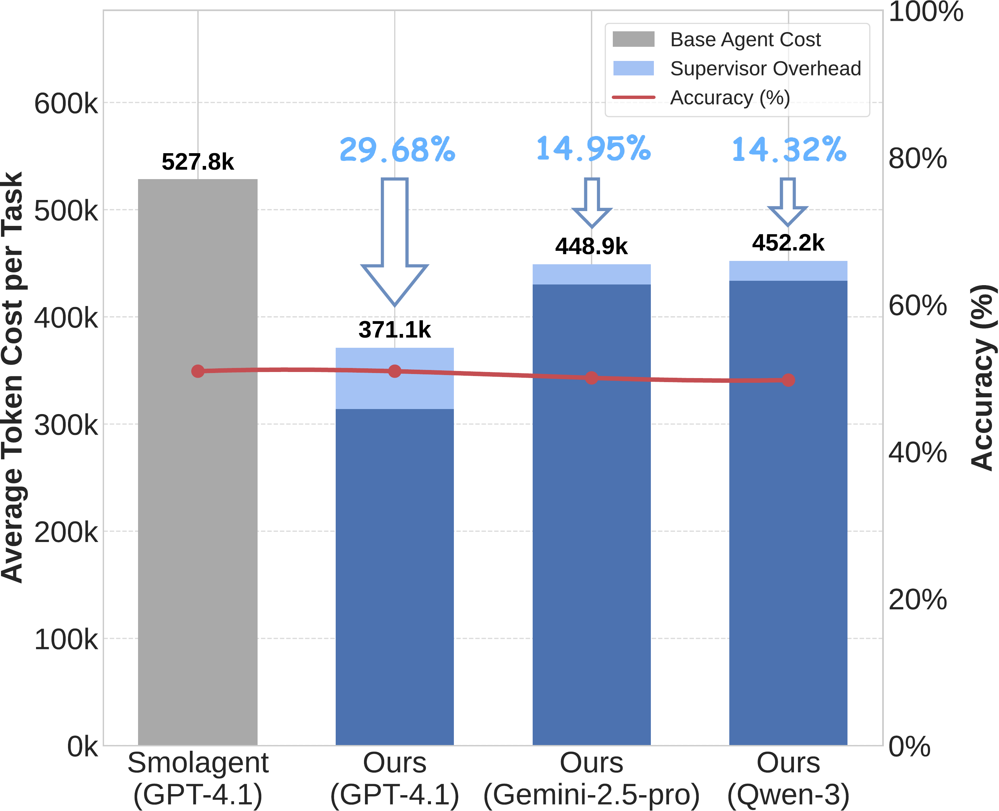

多智能体系统（Multi-Agent Systems，MAS）在复杂任务中表现出色，但其日益增长的自主性和运营复杂性往往导致严重的效率问题，例如过度的token消耗和由错误信息引发的失败。现有的方法主要关注事后失败归因，缺少主动的、实时的干预来增强鲁棒性和效率。为此，我们提出了Supervisor，这是一个轻量级、模块化的运行时自适应监督框架，无需改变基础智能体的架构即可运作。Supervisor由一个无LLM的自适应过滤器触发，在关键时机进行干预，主动纠正错误、引导低效行为并净化观测。在具有挑战性的GAIA基准测试中，Supervisor在不影响成功率的情况下，将Smolagent框架的token消耗平均降低29.68%。在数学推理、代码生成和问答等五个额外基准测试以及各种SoTA基础模型上的广泛实验，验证了我们方法的广泛适用性和鲁棒性。
| 项目 | 内容 |
|---|---|
| 论文 ID | 2510.26585 |
| 标题 | Stop Wasting Your Tokens: Towards Efficient Runtime Multi-Agent Systems |
| 作者 | Fulin Lin, Shaowen Chen, Ruishan Fang, Hongwei Wang, Tao Lin |
| 单位 | 浙江大学¹, 西湖大学², 浙江大学CAD&CG国家重点实验室³ |
| 会议/期刊 | ICLR 2026 |
| 原文保存位置 | ~/.openclaw/workspace/papers/20260306_DeepLearning/source/ |
| 报告生成日期 | 2026-03-06 |
大型语言模型（LLM）的出现推动了多智能体系统（MAS）的重大进展，使其能够在数学推理、代码生成和复杂问答等多样化和挑战性领域取得显著性能。这一进展促使研究向复杂的智能体架构发展，包括从反馈和经验中学习的自进化系统，以及能够适应任务复杂性的动态拓扑结构。
然而，一个关键的悖论出现了：随着这些系统变得更加能力和复杂，它们往往变得不那么鲁棒和经济可行。系统性低效会导致 prohibitive 的计算成本，而复杂的交互会引入不可预测失败的向量。这种缺乏鲁棒性的问题源于现代MAS的运营复杂性带来了重大的可靠性挑战。这些系统中固有的长交互链为错误传播创造了肥沃的土壤。例如，一个智能体生成的单一错误信息（这是当今强大但偶尔会产生幻觉的基础模型的常见风险）可以被提交到内存中并毒害所有下游智能体的推理。这些漏洞意味着即使是 state-of-the-art 的MAS也可能在远低于其理论能力的任务上失败，仅仅是因为缺乏运营鲁棒性。
此外，经济低效问题也是MAS在现实世界部署的主要障碍。作者识别出两个主要的低效来源：
为了应对这些交织的挑战，作者提出了Supervisor，这是一个轻量级、模块化的框架，通过实时监控来增强多智能体系统的鲁棒性和效率。Supervisor包含一个自适应过滤器，能够在关键时机进行适应性干预，以减轻关键的运营风险：它进行主动错误诊断，为低效行为提供务实的指导，并执行自适应观测净化以减少来自长观测的上下文噪声。
主要贡献：

图1：Supervisor框架：概念和影响。(a) MAS中常见失败模式的示例，包括错误传播和低效循环，以及我们Supervisor的相应干预。(b) 传统MAS的概述，突出了发生此类失败的高风险交互位点（智能体-智能体、智能体-工具、智能体-内存）。(c) 我们的Supervisor的核心工作流程，监控这些交互以提供实时干预。(d) 产生的监督MAS (SMAS)，它集成了Supervisor以增强鲁棒性和效率。(e) GAIA (Level 2)上的性能，其中SMAS（蓝色）相比基线（红色）减少35%的token成本和63%的方差。
:::
大型语言模型的最新进展推动了越来越复杂的多智能体系统的开发，能够处理复杂的多步骤任务。Tongyi DeepResearch、AgentOrchestra 和 Aime 等框架体现了这一趋势，引入了复杂的特性，如分层结构、动态智能体管理和端到端训练。然而，这种日益增长的架构复杂性不可避免地引入了维持运营鲁棒性和计算效率的重大挑战。
大量工作涌现出来解决MAS鲁棒性挑战，主要关注事后的失败归因。Aegis、SHIELDA 等系统提出了失败分析的方法论，而 AgenTracer 和 A2P 引入了更好地追踪任务失败根本原因的方法。虽然这些方法很有价值，但它们本质上是反应性的，在失败发生后才进行分析。相比之下，Supervisor 旨在主动、实时干预，在高风险步骤导致系统性失败之前检测和减轻它们。
另一流研究针对MAS的效率，这是一个主要由token消耗驱动的关键因素。大多数方法专注于设计时优化。AgentDropout、SafeSieve 等方法通过消除智能体或通信链接来精简系统架构。另一个方向是上下文压缩，旨在通过总结或提炼观测来减少token数量。我们的工作与这些方法正交。相反，作者引入了运行时过程控制。Supervisor 在执行过程中解决动态低效，这是一个可以增强现有系统的补充方法。
作者的工作基于这样的理念：多智能体系统中复杂且通常混乱的交互可以主动管理以提高鲁棒性和效率。为了形式化这一点，作者引入了监督多智能体系统（SMAS）的概念。
定义：监督多智能体系统（SMAS） SMAS是一个配备元级控制智能体的多智能体系统（MAS），该元级控制智能体被称为监督者（Supervisor）。监督者的目标是实时监控智能体交互，主动检测和减轻运营风险，同时不改变其监督的智能体的核心逻辑。在这项工作中，作者将这个概念性的监督者实现为一个名为Supervisor的具体智能体。
监督的基本单位是交互，即智能体与其他系统组件交互时发生。作者将交互分为三种主要类型：
为了做出明智的决策，Supervisor被提供了一个丰富的、实时的MAS状态快照，作者将其形式化为上下文窗口。
定义：上下文窗口 标准上下文窗口 $\mathcal{W}$ 是一个由五个关键元素组成的元组： $$\mathcal{W} = (N, Q_g, Q_l, T_l, S)$$ 其中 $N$ 是被审查的智能体的名称，$Q_g$ 和 $Q_l$ 是全局和局部任务，$T_l$ 是智能体 $N$ 最近动作和观测摘要的本地轨迹，$S$ 是智能体最新交互步骤的摘要。对于诊断系统范围内的低效，作者将其扩展为 $\mathcal{W}_{\text{ext}} = \mathcal{W} \cup \{T_g\}$，其中 $T_g$ 是所有智能体交互的全局轨迹。
Supervisor的角色是诊断高风险交互并执行有针对性的干预。作者定义了三个主要的干预上下文，$c \in \mathcal{C} = \{c_{\text{error}}, c_{\text{inefficient}}, c_{\text{excessive}}\}$，这些上下文激活三种核心监督策略：
这些策略通过从全局动作空间 $\mathcal{A}$ 中选择一个动作 $a$ 来实现。允许动作的特定子集 $\mathcal{A}(c)$ 由干预上下文正式定义如下： $$\mathcal{A}(c) = \begin{cases} \{ \textit{correct\_observation}, \textit{provide\_guidance}, \textit{run\_verification} \} & \text{if } c = c_{\text{error}} \\ \{ \textit{approve}, \textit{provide\_guidance} \} & \text{if } c = c_{\text{inefficient}} \\ \{ \textit{correct\_observation} \} & \text{if } c = c_{\text{excessive}} \end{cases}$$

图2：Supervisor的架构和工作流程。(a) 用于识别高风险交互的无LLM自适应过滤器。(b) 上下文窗口，聚合目标和工作流程以实现态势感知。(c) 干预动作谱，从简单的批准到密集的验证。(d, e) GAIA任务上的案例研究，比较基线MAS (d)与我们的SMAS (e)，后者将步骤减少43%，token成本降低超过70%。(f) 交互的监督工作流程，从过滤到最终监督动作。
:::
基于第3节介绍的监督多智能体系统（SMAS）的形式化，作者详细阐述了Supervisor的架构和运营工作流程。我们的方法论围绕三个基本问题构建：监督什么、何时监督和如何监督。
监督的主要目标是初步形式化中定义的三个高风险交互点：智能体-智能体、智能体-工具和智能体-智能体-内存交互。这些点是错误和低效被引入并在整个系统中传播的主要渠道。我们的目标是监控这些特定渠道以维护MAS的运营完整性。
虽然朴素方法可能监控每个交互，但相关的计算成本是 prohibitive 的，并且会破坏我们提高效率的目标。因此，我们框架的基石是一个轻量级的、无LLM的自适应过滤器，旨在仅在关键时机触发监督。
这个过滤器旨在快速且基于启发式，监控MAS的三种预定义高风险场景：
一旦高风险交互被标记，Supervisor利用丰富的上下文窗口和多级干预策略来提供细致、有效的响应。
记忆增强的上下文窗口：为了做出有效的决策，监督者必须比任何单个智能体更全面地理解系统状态。这就是为什么Supervisor被概念化为有自己的记忆模块，而不仅仅是一个简单的监控器。上下文窗口 $\mathcal{W}$ 聚合了全局任务 $Q_g$、智能体的局部任务 $Q_l$、交互摘要 $S$ 及其最近的本地动作轨迹 $T_l$。关键的是，对于诊断复杂的低效，Supervisor还访问全局轨迹 $T_g$，授予它超越任何 individual智能体有限视角的整体视角。
干预动作谱：凭借丰富的上下文，Supervisor从多级动作空间 $\mathcal{A}$ 中选择动作，根据问题严重程度调整干预强度。这些动作从最小轻推到全面纠正不等：
数据集：在跨越三个领域的六个基准测试上验证方法。主要是GAIA验证集，使用了五个额外基准：数学推理（AIME 2024和GSM8k-Hard子集）、代码生成（HumanEval和MBPP）和问答（DROP子集）。
基线：在几个基准上与配备网页浏览和代码执行能力的综合智能体系统进行比较。包括单智能体执行方法（vanilla LLM、Self Consistency CoT、CodeAgent）和多智能体系统（Smolagent、OAgents、MetaAgent、OWL、AWorld）。
实现细节：为了评估模型无关性，使用多个基础模型测试Supervisor。在GAIA上主要使用GPT-4.1作为所有智能体的基础模型，并评估Supervisor在使用GPT-4.1、Gemini-2.5-pro-0605和Qwen3-235B-2507时的表现。在所有其他基准上，使用Qwen3-32B来进行更资源受限的设置。
指标：对于GAIA和代码生成基准，报告标准pass@k指标。对于数学推理，报告最终解决率。对于问答，报告DROP的F1分数。在所有实验中，细致跟踪并报告总token消耗作为效率的主要衡量标准。
显著效率提升，竞争力准确率

图3：Supervisor增强了GAIA基准上的性能一致性。(a) token成本分布的小提琴图，揭示了我们监督MAS (SMAS)更紧凑和可预测的性能。(b) 直接比较，量化了我们的SMAS在所有难度级别上实现的token成本方差的大幅减少。
:::
主要实验结果如表1所示。在GAIA验证集上，当与Smolagent框架集成时，Supervisor在pass@1时实现了平均token减少29.68%，同时保持了统计等效的成功率。值得注意的是，在更困难的任务上，效率提升更加显著，token节省在Level 2达到32.39%，在Level 3达到30.10%（pass@3时）。
跨基准的泛化
表2显示了跨五个额外基准的泛化。Supervisor通常实现帕累托改进。在数学推理中，它将AIME解决率提高6.67%，同时削减18.92%的token成本。在代码生成中，它在HumanEval上保持竞争力的准确率，并进一步减少23.74%的token使用。
模型无关的泛化
为了证明Supervisor的收益是架构性的而非模型特定的，作者使用三个不同的强大LLM作为其在GAIA上的推理引擎对其进行评估。如图所示，Supervisor始终产生显著的token节省，并在所有模型上保持稳健性能，包括GPT-4.1、Gemini-2.5-pro和Qwen3-235B。
提高鲁棒性和性能一致性
除了平均性能，作者将鲁棒性定义为智能体性能的一致性。如图3所示，Supervisor显著降低了每个任务token消耗的方差。SMAS的分布明显更短更宽，表明更集中和可预测的性能配置文件。
消融研究
作者在完整GAIA验证集上进行了消融研究，以隔离Supervisor三个核心策略的影响。比较完整框架与w/o Correction（主动错误纠正）、w/o Guidance（低效指导）和w/o Purification（自适应观测净化），揭示了不同的角色。Purification是效率的主要驱动力；禁用它会急剧减少token节省（从29.68%降到15.96%）。相反，移除Correction或Guidance导致最显著的准确率下降，确认它们的鲁棒性必要性。

图4：(a) GAIA上具有挑战性的任务的消融研究，剖析了每个模块对框架整体效率和鲁棒性的不同贡献。(b) 模型无关性验证，显示Supervisor在 diverse 基础模型上一致地提供token节省。
:::
MAS无关的泛化
为了验证Supervisor的MAS无关特性，作者将Supervisor集成到两个不同的多智能体系统框架中：AWorld和OAgents，并在GAIA基准的子集上评估它们的性能。结果表明，Supervisor始终如一地增强了两个框架的性能，突出了其跨不同MAS架构的多功能性和有效性。
开销分析
至关重要的是，这项工作报告的所有效率提升代表净节省，充分考虑了Supervisor本身的成本。监督者本身产生的开销很小，平均仅占15.45%的总token使用，这验证了其轻量级设计。关于延迟，监督干预在每个任务上平均增加不到一分半钟。
监督者作为基础MAS组件
作者的工作将Supervisor定位为未来多智能体系统的基础组件，类似于内存库和工具使用框架等已建立的模块。通过提供实时、自适应的监督，Supervisor减轻了跨不同MAS架构普遍存在的鲁棒性和效率关键挑战。其模块化设计允许与现有系统无缝集成，增强其性能，同时无需对其核心逻辑进行根本更改。
与相关监督智能体的比较
一个相关概念是AWorld中的Guard智能体，主要在关键步骤调用以进行事实验证以提高任务准确率。虽然有价值，但其范围与作者的方法显著不同。Supervisor采用更广泛的目标，通过持续（尽管是自适应过滤的）监控和更广泛的干预范围（包括错误纠正、低效指导和观测净化）来提高整体系统效率和鲁棒性。
更广泛的见解
作者的工作还产生了更广泛的见解。首先，他们发现看似"嘈杂"的信息（如HTML结构和截断提示）作为ReAct风格智能体的信号至关重要。过度积极的净化可能会反直觉地损害性能。其次，对token成本的关注强调了更全面评估MAS效率的必要性。综合分析还必须考虑外部工具API调用的频率和复杂性，这些调用的负担从MAS卸载了大量负担。
未来方向
这些见解为未来工作指明了几个有希望的途径。首先，超越启发式规则，探索基于学习的自适应过滤器可能实现更精确、动态地控制监督者调用。其次，进一步研究应侧重于减轻监督调用引入的延迟开销以增强实时适用性，同时创建复杂的净化技术来解决"噪声作为信号"的权衡。最后，为MAS开发通用资源消耗指标仍然是一个关键的开放挑战。
结论
在这项工作中，作者介绍了Supervisor，这是一个轻量级和非侵入性的元智能体框架，可增强多智能体系统的鲁棒性和效率。通过实时、自适应的监督，Supervisor通过三个核心策略减轻了常见失败模式并减少计算开销：主动错误纠正、务实的低效指导和自适应观测净化。广泛的实验展示了显著的帕累托改进。在具有挑战性的GAIA基准上，Supervisor在保持竞争力的任务成功率的同时，平均减少29.68%的token消耗，这是构建更实用和可扩展的智能体系统的关键一步。
实时监督框架：提出了Supervisor，这是一个创新的元智能体框架，能够在运行时监控和干预多智能体系统的交互，无需修改基础智能体架构。
自适应过滤器：设计了无LLM的轻量级自适应过滤器，仅在关键时机触发监督，避免了对每个交互的监控带来的计算开销。
三级干预策略：提出了三种核心监督策略——主动错误纠正、低效行为指导、自适应观测净化，形成了一个从最小干预到深度干预的完整动作谱。
显著的效率提升：在GAIA基准上实现了29.68%的平均token节省，同时保持竞争力准确率，在更困难的任务上效果更显著。
过度净化风险：论文指出，过度积极的观测净化可能会反直觉地损害性能，因为看似"嘈杂"的信息（如HTML结构）实际上可能包含对智能体有用的信号。
延迟开销：虽然token效率显著提升，但监督调用引入了延迟开销（平均每任务增加不到1.5分钟）。
模型依赖性：虽然论文声称模型无关性，但实验主要使用商业模型（GPT-4.1、Gemini-2.5-pro），对开源模型的测试相对有限。
访问地址: http://localhost:8890/view/20260306_DeepLearning